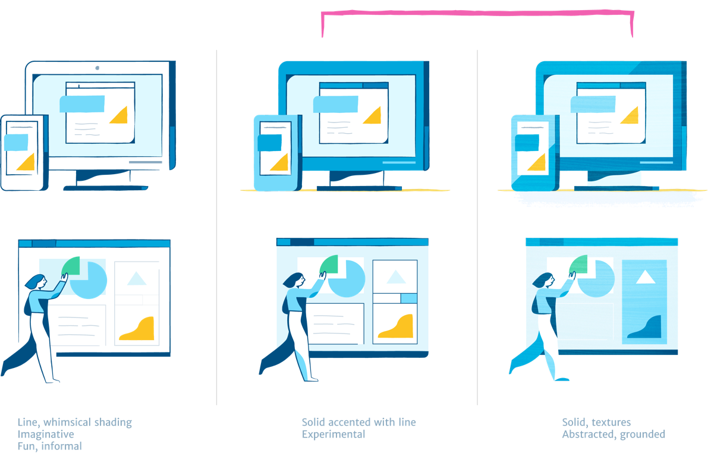
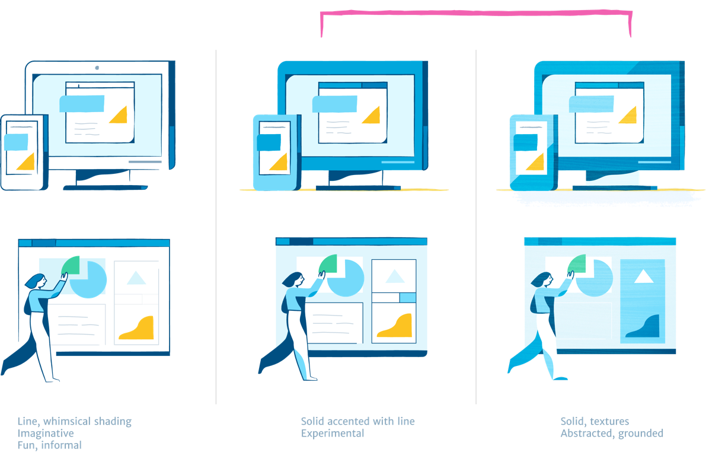

WordPress: Inclusion matters
Building an inclusive and representative illustration brand
Quick scenario: You're on your phone, going through the onboarding flow for a new app you just downloaded. Helpful illustrations appear, guiding and educating you through the process. Now hold up: are the characters in these illustrations diverse or mainly white? Do they seem to be young tech-oriented millennials, mostly men?

Tech illustrations often feature the same imagery: young, white people (usually men), surrounded by gadgets, the occasional cup of coffee, in a beautiful workspace. For consumer-oriented products, this creates an incredibly limiting brand image, unless you are solely targeting city-dwelling, coastal tech workers. One important way we can address this is by using marketing and product imagery that is more representative and inclusive!
When I teamed up with WordPress to develop their illustration brand and 50+ product illustrations, this was a major focus of ours. We pushed each other to define what representation meant, and how it could be expressed through the characters and illustration voice.
The team truly cares about inclusivity and we pushed each other on this, especially given that WordPress powers 25% of sites on the web and caters to a very broad consumer audience. [1]

Starting blocks: Character design
An illustration brand voice, for instance, can intentionally be designed to be inclusive and representative, values that you can begin with at the start. For instance, we built a range of skin tones into the color palette, instead of relying on just a default white or pink, as well as a range of simple facial features.
We also wanted to approach the design of the characters with different body types in mind. For example, I approached body shapes abstractly, making sure to represent a range of shapes and poses — from very square, blocky figures to rounded, curvier ones.


Our initial explorations centered around style and how this visual language could best express WordPress's authentic, accessible mission to democratize publishing.
Can we add in a bit of quirkiness and a hand-drawn feel with expressive linework - and how can we balance that with the original geometric, shape-based style so that it doesn't feel like too much of a departure?
It may all seem simple and symbolic, but Diogenes Brito hits the nail on the head about what this represents in his write-up about using brown hand in Slack's "Add to Slack" button feature [2].
One thing I appreciated about this project is that it challenged me to acknowledge the biases that I personally hold. For instance, John noted that many of the characters I had drawn seemed to exist in this perfect “latte/laptop world”:
“Another challenge to note, that is common in the tech industry, is a bias towards believing that our users are on a desktop machine or using a mobile phone in some workspace or coffee shop or “beautiful” setting of a studio. This notion doesn’t match the day-to-day people trying to get their jobs done as non-tech workers.” - John

With that, we developed out a system of characters, from the smallest scales (hands gesturally interacting with UI elements) to the largest (characters in full-blown settings, building out their websites).

Smallest scale: hands
Avatars

Character vignettes

Largest scale: full body

Characters interacting with the UI, "building" their sites
“A line is a dot that went for a walk”
The team wanted

 

The goods
Fusce dapibus, tellus ac cursus commodo, tortor mauris condimentum nibh, ut fermentum massa justo sit amet risus. Nullam quis risus eget urna mollis ornare vel eu leo.

I think the argument hardly needs to be made: not only is this socially more inclusive for the community of users, it also artistically makes for more visually interesting compositions.
One of my first forays into design and programming was in developing my own WordPress blog back in high school. Because it was something my friends and I nerded out over together for fun, I never thought twice about feeling out of place or asking silly questions.
Fast-forward through college, countless hackathons, and time in the industry, and I can very clearly see how many aspects of tech culture are alienating to beginners, people of color, women, and anyone else who doesn't fall into the "young white millennial male" hacker stereotype.

Credits
Design: Cece Yu, Aly Weir, Jackie Ho
Art Direction: Aly Weir, Kate Aronowitz
Special thanks: Josh Puckett, Sunnie Sang